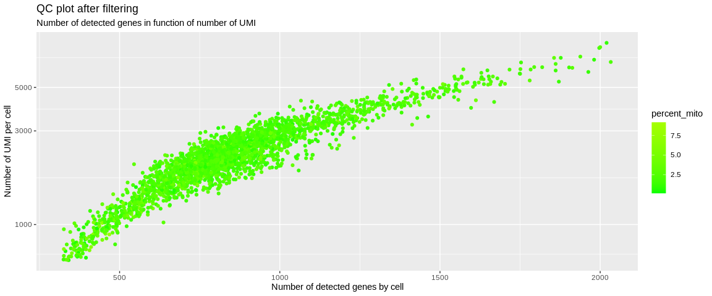

Pre-processing¶
The pre-processing steps are used to clean the data in order not to distort the results of downstream analyses (clustering analysis, markers, differential expression analysis, etc.).
Filter out low quality cells¶
The first step is to filter out cells that are of poor quality. This can concern the cells that exploded during the preparation of the library, the empty beads or those that contain ambient RNA, etc... We will be able to base ourselves on different parameters (quality controls) like the number of detected genes, the number of UMI, the percentage of expressed genes of the mitochondria. Some barcodes can be considered as doublets, that is to say that two cells have been encapsulated in the same bead. This phenomenon will be translated in the opposite way by a very important number of detected genes and a library size largely superior to the rest of the dataset.
Detection rate of mitochondrial genes¶
A high level of expression of genes of the MT genome can express a cell in apoptosis.
With the function PercentageFeatureSet, we calculate for each cell the %
of detection of mitochondrial genes among all expressed genes. If we have
gene names, we can directly use the pattern parameter by entering
"^MT-" to capture all genes starting with "MT-" (if we work with the
human genome). If there is no pattern, thanks to the features parameter
we can directly give it a vector containing the genes present on the MT
genome. We can use the Biomart annotation to retrieve all the genes present
on the MT chromosome if the IDs (or the gene names) have no prefix to
differentiate them. The function PercentageFeatureSet adds a column with
the % values in the cell metadata (object@meta.data).
A cell is generally considered to be in apoptosis when the transcriptome detects more than 20% of the genes in the MT genome. Some are more stringent in lowering this threshold to 10%.
## Retrieve genes from the MT genome using biomart
genes_MT <- annotated_hg19$ensembl_gene_id[annotated_hg19$chromosome_name == "MT"]
pbmc_small <- PercentageFeatureSet(pbmc_small,
features = genes_MT, #Vectors of gene names present on the MT genome
col.name = "percent_mito", #Defines the name of the new column generated in the metadata of the Seurat object
assay = "RNA")
## Violin plot of QC (Quality Controls)
VlnPlot(object = pbmc_small,
features = c("nCount_RNA", "nFeature_RNA", "percent_mito"), #Parameters to plot (either gene expression or continuous variable in cell metadata)
ncol = 3, #Number of columns if several figures are to be ploted
pt.size = 0.01) #Point size
## Graphical representation of QC
ggplot(pbmc_small@meta.data,
aes(y = nCount_RNA,
x = nFeature_RNA,
color = percent_mito)) +
geom_point() +
geom_hline(yintercept = 650, linetype = 'dotted') +
geom_vline(xintercept = 300, linetype = 'dotted') +
scale_y_log10() +
scale_color_gradient2(low = "green",
high = "red",
mid = "yellow",
midpoint = 20) +
labs(x = "Number of detected genes by cell",
y = "Number of UMI per cell",
title = "QC plot", "Number of detected genes in function of number of UMI")
Thanks to these quality control plots we can try to differentiate the good quality cells from the others. To do this, we look at the different distributions and try to identify two populations and establish the threshold as the value that will separate them. Knowing that the poor quality cells are those that will express few genes, weakly and/or strongly express the genes of the MT genome.
We can also use a histogram representation. I recommend the three types of figures because depending on the dataset, the best method to identify outliers is different.
hist(pbmc_small$nCount_RNA,
breaks = 100,
xlab = "Number of UMI per cell",
main = "")
abline(v = 650, col = "red")
abline(v = 10000, col = "red")
hist(pbmc_small$nFeature_RNA,
breaks = 100,
xlab = "Number of detected genes by cell",
main = "")
abline(v = 300, col = "red")
abline(v = 2300, col = "red")
Filtering thresholds¶
So we can identify the outliers. In the scatter plot, we see a point cloud
that is detached from the rest of the cells. On the last violin plot for
the distribution of the percent_mito we can choose the threshold at 10%
because the outliers are rather above 10%. The histograms, on the other hand,
allow us to identify potential doublets materialized by barcodes containing
a lot of UMIs and/or a lot more detected genes that are completely separated
from the rest of the distribution.
To filter a Seurat object we simply use the subset function where we filter
according to the values contained in the metadata frame.
We will remove all the cells :
- whose library size is less than 650 UMI and more than 10 000.
- that detect less than 300 genes or more than 2300.
- whose percentage of expressed genes of the MT genome exceeds 10%
## Filtering SeuratObject
pbmc_small <- subset(pbmc_small,
percent_mito < 10 &
(nCount_RNA > 650 & nCount_RNA < 10000) &
(nFeature_RNA > 300 & nFeature_RNA < 2300))
## Plot
ggplot(pbmc_small@meta.data,
aes(x = nFeature_RNA,
y = nCount_RNA,
color = percent_mito)) +
geom_point() +
scale_y_log10() +
scale_color_gradient2(low = "green",
high = "red",
mid = "yellow",
midpoint = 20) +
labs(x = "Number of detected genes by cell",
y = "Number of UMI per cell",
title = "QC plot after filtering", "Number of detected genes in function of number of UMI")

1 2 3 | |
This manipulation of the Seurat object will cause all the non-retained
cells to be removed from the different expression matrices (@counts
and @data) and from the meta.data slot. Less than 100 cells were
considered to be of low quality or a duplicate and were removed from
the analysis.
Note
This dataset was already filtered by cellRanger algorithm. With your data,
it will probably be more messy to understand the bondary between low and
good quality cells. Don't hesitate to zoom in on histogram and violin plots
to better identify your cutoffs.
Also in the VlnPlot function from Seurat, you can use the log parameter
to better see outliers (barcodes that contains mRNA ambiant) !
Cell Normalization¶
Data normalization allows to get rid of cell-specific biases
(e.g. sequencing depth, amplification, GC content). It allows to make
the libraries comparable. To do this, we will use the Seurat function,
NormalizeData which is based on the assumption that each cell contains
the same amount of RNA. With the logNormalize method, each UMI is
normalized as follows, for each cell :
Do you see [ norm.UMI = log2(\frac{UMI}{nCount.RNA} \times scale.factor +1) ] ?
If you see some weird code outside R chuncks, don't hesitate to refresh your page in order to visualize correctly equations
The scale.factor is set to 10 000 by default, most often we use the
median of the library size (= total number of UMIs per cell, = nCount_RNA
in meta.data). If the scale factor is equal to 1e6 then we would get
log2(CPM+1). CPM : Count Per Million.
## Inter-cell normalization
pbmc_small <- NormalizeData(pbmc_small, #SeuratObject
assay = "RNA", #Assay to use
normalization.method = "LogNormalize", #Normalization method
scale.factor = median(pbmc_small$nCount_RNA), #Scale factor
verbose = TRUE)
The @data slot is been updated with normalized UMI.
Tip
There is a shortcut to access the cell metadata columns :
object@meta.data$column == object$column
Identification of Highly Variable Genes (HGV)¶
We can represent each cell as the combinatorial expression of each gene. There are therefore many dimensions, which creates a lot of complexity.
A first step is to leave out genes that contain very little information, i.e. the genes that are not expressed or those that are expressed in an equivalent way for all cells. These genes will not be able to help differentiate cell populations. Removing them will allow the improvement of dimension reduction and clustering methods for reliable statistical inference (or at least removing complexity).
To identify the most variable genes we use the Seurat function
FindVariableFeatures with the method vst which is based on the
relation between the expression mean and the variance of each gene.
With the nfeatures parameter we retrieve the 2000 most variable genes
according to the vst method.
pbmc_small <- FindVariableFeatures(pbmc_small, #SeuratObject
selection.method = "vst", #Method
nfeatures = 2000) #Top HVG (Highly Variable Gene), default value
pbmc_small
## Plot
VariableFeaturePlot(pbmc_small)
The function FindVariableFeatures updates a slot:
object@assays[["RNA"]]@meta.data: dataframe containing the different variables calculated by the vst method. For each gene we have :vf_vst_counts_mean: expression meanvf_vst_counts_variance: expression variancevf_vst_counts_variance.expected: expected variancevf_vst_counts_variance.standardized: standardized variancevf_vst_counts_variable: logical, is the gene a variable gene TRUE / FALSEvf_vst_counts_rank: rank of HGV (ifNAthe gene is not an HGV)var.features: ifNAthe gene is not HGV, else you'll see the gene namevar.features.rank: rank of HGV (ifNAthe gene is not an HGV), same asvf_vst_counts_rankcolumn ifvstis the last or only HGV method.
Tip
We can directly access to HGV via : VariableFeatures(object)